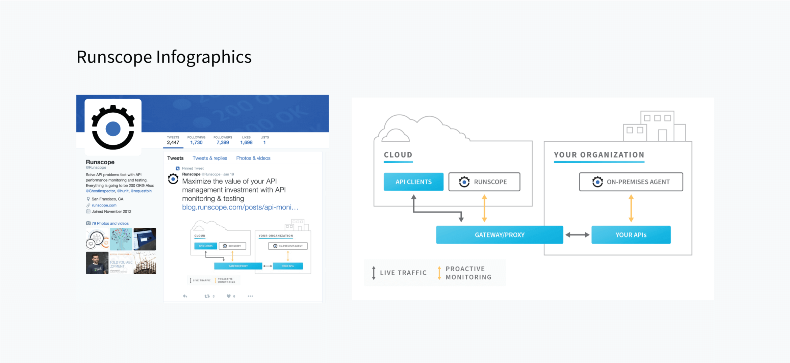
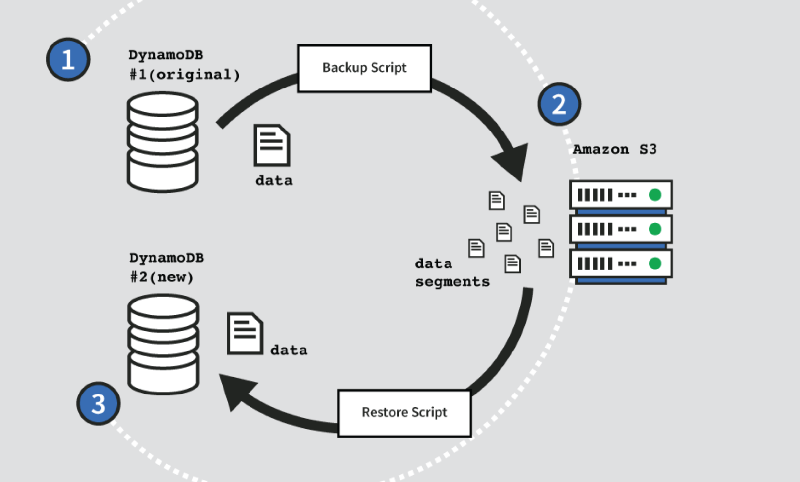
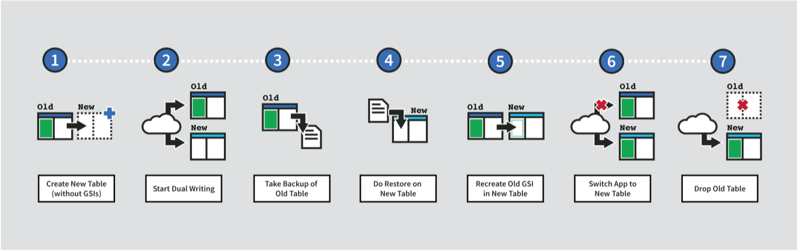
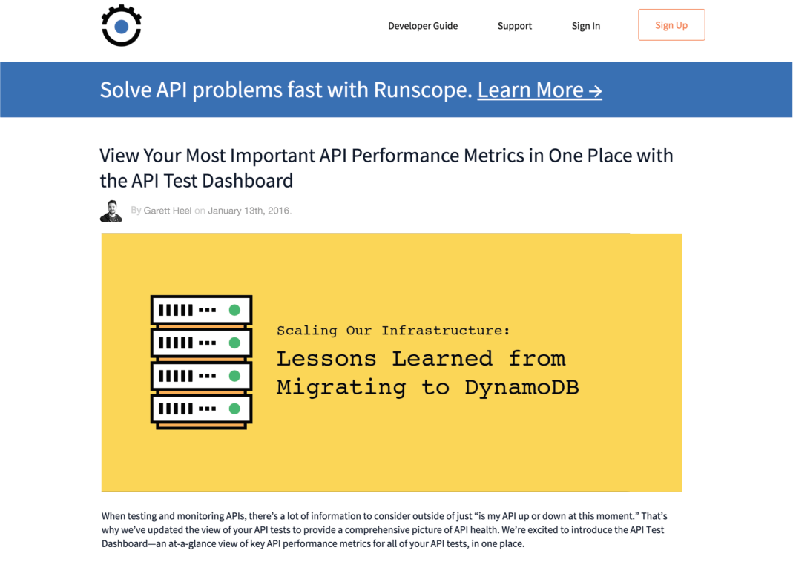

Runscope
2015 - 2016
While at Runscope, my main work was mostly on the Ghost Inspector product, but there were a lot of small marketing and graphic work that I did for the main Runscope website.
Marketing
Graphic design
back to the toparrow_upwards
back to portfoliosubdirectory_arrow_left
01. Marketing
Here are a few examples of graphic work that I did for Runscope's marketing.
I created a few Infographics and charts for the Twitter/X account.
This was a larger piece of graphic work for one of the company blogs that talked about Infrastructure on DynamoDB.
 